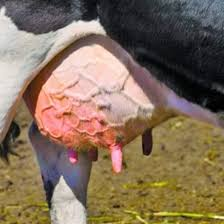

Mastitis in Goats

What is Mastitis?
Mastitis is an inflammatory infection of the udder in goats, typically caused by bacterial pathogens such as Staphylococcus and Streptococcus. It can lead to reduced milk production, pain, and serious health complications if left untreated.
Symptoms of Mastitis in Goats:
- Swollen, hot, and painful udder
- Abnormal milk (clots, blood, or watery texture)
- Reluctance to be milked or nursed
- Loss of appetite and fever
- Reduced milk yield
Causes:
- Poor milking hygiene and contaminated equipment
- Injuries to the udder or teats
- Bacterial infections due to unsanitary housing conditions
- Transmission from infected goats
Treatment and Prevention:
Treatment includes the use of antibiotics prescribed by a veterinarian, proper milking techniques, and frequent udder massages to help clear the infection. Preventative measures include maintaining a clean environment, practicing good milking hygiene, and ensuring proper nutrition for overall goat health.